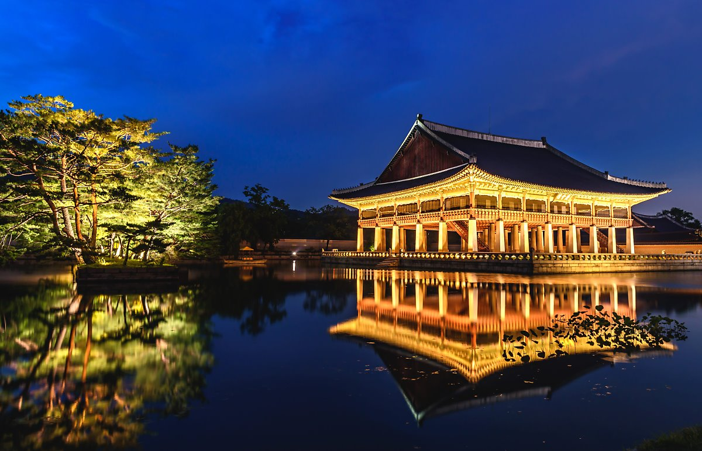

It was in 1395, three years after the Joseon Dynasty was founded by King Taejo, when the construction of the main royal Palace was completed after the capital of the newly founded dynasty moved from Gaeseong to Seoul. With Mount Bugaksan to its rear and Mount Namsan in
the foreground, the site of Gyeongbokgung Palace was at the heart of Seoul and, indeed, deemed auspicious according to the traditional practice of geomancy.